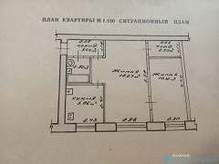

быстрый рецепт печенья

продукты для печенья
- Масло сливочное - 100 г
- Яйца - 2 шт.
- Сахар - 160 г
- Мука в/с - 150 г (1 стакан ёмкостью 250 мл)
- Разрыхлитель - 1 ч. ложка
- Какао-порошок - 50 г
- Ванильный сахар - 10 г
- Соль - 1 щепотка
приготовление печенья
В глубокой миске смешать до однородного состояния мягкое сливочное масло, сахар, ванильный сахар и соль.
Добавить яйца и какао, снова перемешать.
дное печенье аккуратно переложить 350 0
Приятного аппетита!